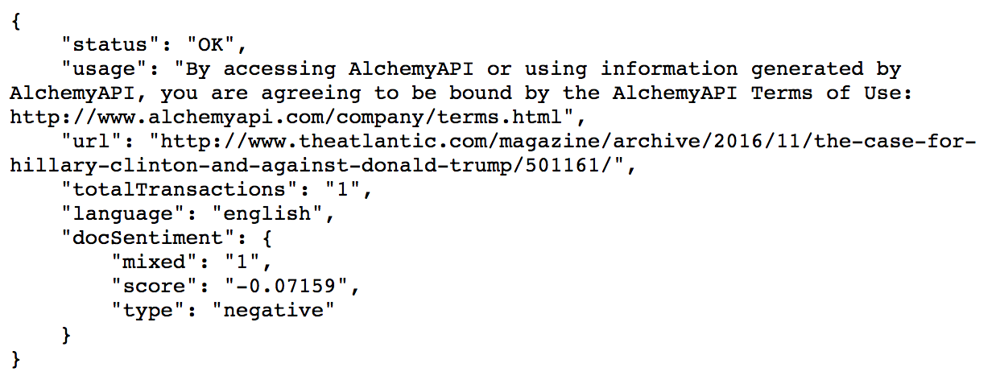

After our request has been properly formatted and sent, we will receive a JSON-formatted response including our Sentiment Analysis (docSentiment):

Just as we did with our request, let’s break the response down into its individual components:
Thankfully, our status came back as OK. However, when an does error occur, the status attribute of the response will read ERROR, and the statusInfo attribute will contain a string that describes the error.
Possible error values include:
Based off the docSentiment information we got back in our response, we observe that:
These results make sense, considering it is an article criticizing Donald Trump. Such politically-heated content biased against a public figure will unsurprisingly contain negative sentiment.
On the following Demo page, you can conduct your own Sentiment Analysis by inputting a piece of text. While the results may seem unintuitive at times, it may simply reflect the fact that technology has not yet grasped all the nuances of natural language. For instance, if I enter "I'm crazy about that book!", the docSentiment score and type come back as negative. Clearly, the results do not reflect the emotional nuance of the term "crazy" in this context. Watson assumed the standard dictionary definition of "crazy": mentally deranged, especially as manifested in a wild or aggressive way. Moreover, if I input "I feel blue", the docSentiment type comes back as neutral, rather than negative. While, it may take a while before Watson can pick up on language nuances like tone, sarcasm, and metaphors, its current natural language processing capabilities are quite impressive!